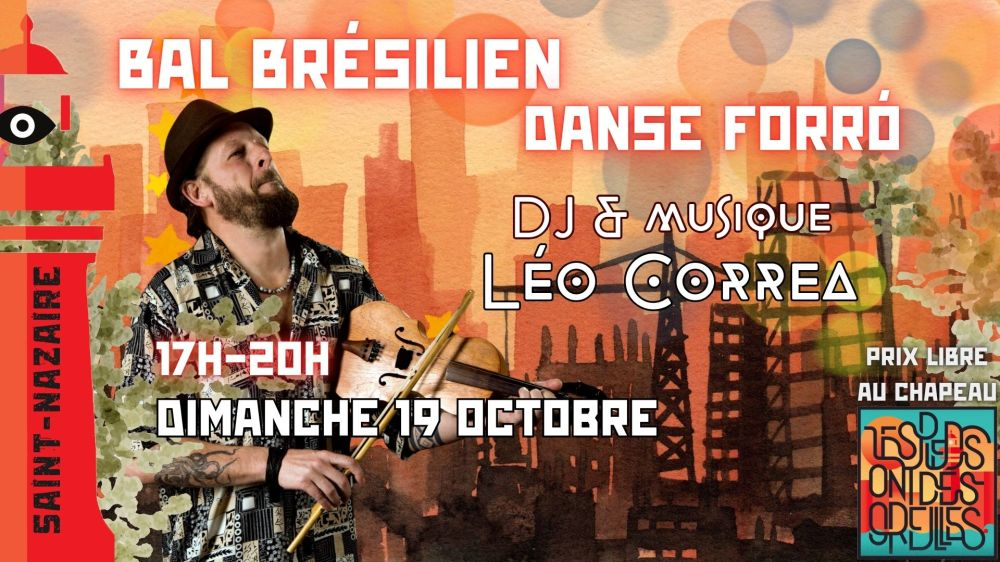

Forró do domingo à Saint-Nazaire

🌿 Forró do Domingo 🌿
Un nouveau rendez-vous pour bien finir le week-end à Saint-Nazaire 💃🕺
On se retrouve à la salle Gambetta pour un bal forró emmené par notre DJ et musicien préféré Léo Corrêa.
Un moment pour le plaisir de danser et de la bonne musique, de se détendre et de partager un moment relax et festif à la fois !
En mode auberge espagnole: apportez ce qui vous voulez !
✨ Ambiance conviviale, sourire garanti, et un petit goût de Brésil pour clôturer la semaine !
📍 Salle Gambetta, Saint-Nazaire
Nous ferons passer un chapeau pour notre DJ et musicien 😉